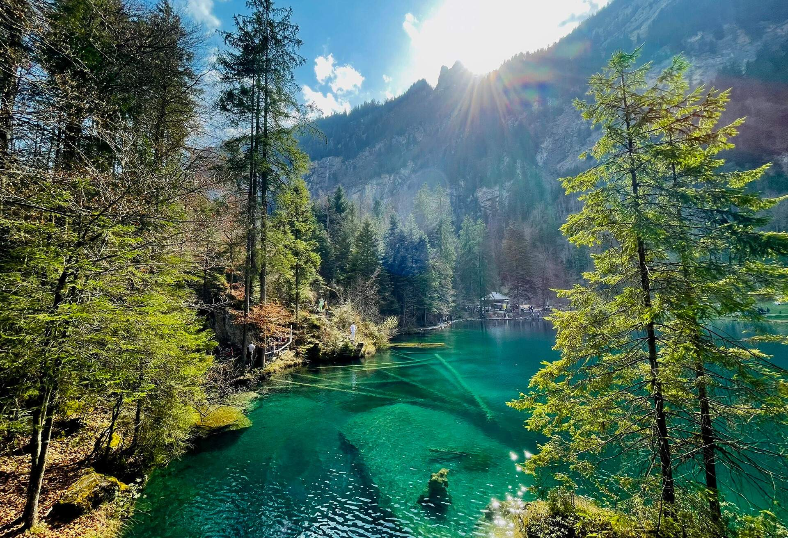

Swtizerland has around 7000 lakes. According to Studying in Switzerland most of the lakes in the country are safe to swim in. One thing though, if you can't see the bottom of the lake, it's considered dirty, and most likely not the best place to swim in.
Most lakes in Switzerland are actually safe to drink from, but you do need to watch out for any bacteria, algae, or water clearness. Switzerland is actually home to about 6% of Europe's fresh water.
Most lakes in Switzerland are blue and clear because of glacial ice water that streams into these lakes. To put it into perspective, Utah has around 2000 lakes, which is 5000 less lakes than Switzerland.
